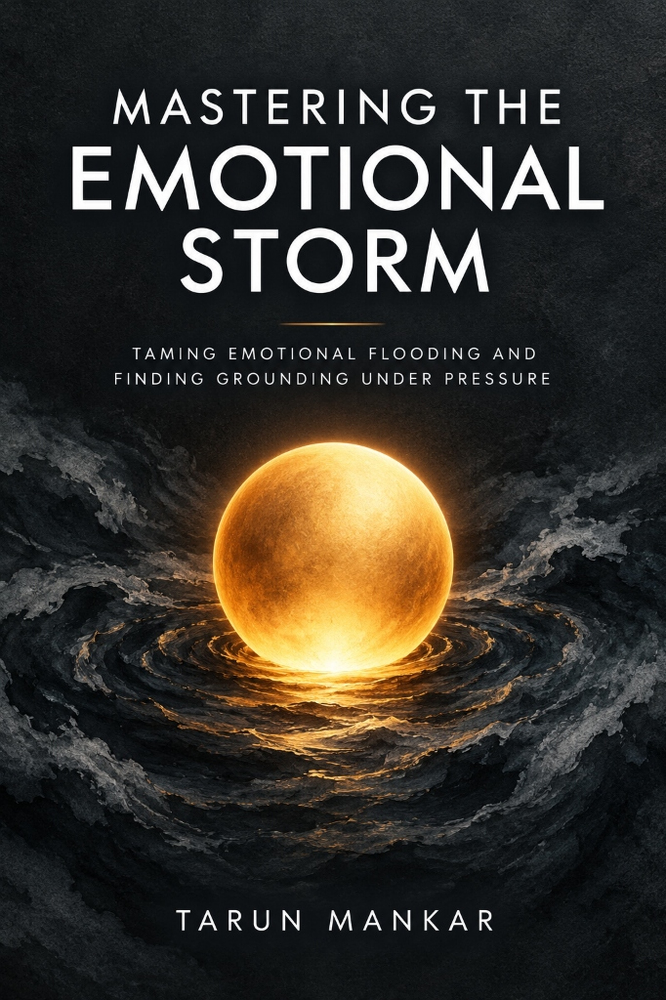

Minor Annoyances Make Your Blood Boil in Seconds? The Neuroscience of Emotional Flooding

Someone cuts you off in traffic, interrupts you mid-sentence, or leaves dishes on the counter — and within 400 milliseconds, an overwhelming wave of heat surges into your chest, your jaw clamps tight, and your vocal cords tense with sharp, biting defensiveness.
Ten minutes later, as the chemical storm subsides, you sit in the wreckage of your own words. The guilt rolls in: "Why did I lose control over something so trivial? What is wrong with my temper?"
The answer is not that you are an aggressive or broken person. The answer is that your autonomic nervous system experienced an acute neurochemical event known as emotional flooding. You did not decide to snap; your biology decided for you.
The Anatomy of the 200-Millisecond Amygdala Hijack
In a regulated nervous system, sensory information travels through the thalamus and is routed to two places simultaneously:
- The High Road (Prefrontal Cortex): The slow, analytical cognitive highway that evaluates context, nuance, and long-term consequences (takes roughly 500 milliseconds).
- The Low Road (The Amygdala): The rapid, primal survival pathway designed to protect you from saber-toothed predators and physical annihilation (takes only 12 milliseconds).
When your nervous system is chronically sensitized by work pressure, unhealed relationship hypervigilance, or exhaustion, the amygdala fires before the prefrontal cortex even receives the sensory packet. It interprets minor disrespect or perceived unfairness as an existential threat.
Within 200 milliseconds, a massive surge of adrenaline and noradrenaline pours into your bloodstream. Your heart rate leaps past 100 BPM. Peripheral blood vessels constrict, shunting oxygenated blood away from your executive reasoning centers and directly into your jaw, shoulders, and fists.
Why "Just Take a Deep Breath" Fails Under Fire
When you are experiencing an amygdala surge, well-meaning advice like *"just count to ten"* or *"take a deep breath"* often makes the rage worse.
Why? Because taking a quick, chest-heavy inhale actually increases your heart rate through respiratory sinus arrhythmia. Furthermore, attempting cognitive self-talk requires executive function — the very neural circuitry currently offline.
To stop an emotional explosion, you cannot use top-down cognitive thought. You must deploy bottom-up somatic biological intercepts that physically cool the autonomic thermal surge.
The 90-Second Thermal Vagus Reset Protocol
Whenever you feel the heat rising in your throat, apply this 3-step biological intervention immediately:
- The Trigeminal Cold Intercept (Mammalian Dive Reflex): Touch cool water, a cold beverage, or cold metal against the skin directly below your eye sockets and across the bridge of your nose. The ophthalmic branch of the trigeminal cranial nerve sends a direct parasympathetic signal to your brainstem, forcing your vagus nerve to apply the biological brake and drop your heart rate by 10 to 20 BPM within seconds.
- The Suboccipital & Masseter Release: Unclench your back molars and let your tongue rest flat on the floor of your mouth. Place two fingers behind your earlobes at the base of your skull. Gently press and rotate. Releasing masseter tension interrupts the motor-pattern reinforcement loop that keeps the amygdala in fight mode.
- The Double-Nasal Sigh with Humming Exhale: Take two quick sips of air through your nose (filling the lungs completely, then topping them off), followed by a slow, extended exhale while gently humming. The vocal cord vibration stimulates the recurrent laryngeal nerve, signaling immediate internal physical safety.

Mastering the Emotional Storm
Taming Emotional Flooding, Calming Instant Reactivity, and Finding Grounding Under Pressure
- How to halt emotional flooding at the neurochemical level before it dictates your words
- 12 somatic vagal brakes to cool down sympathetic fight-or-flight in 90 seconds
- De-escalation verbal scripts that protect boundaries without aggressive reactivity
- The polyvagal roadmap to widening your nervous system's window of tolerance
The Three Non-Negotiable Rules for De-Escalating Your Own Reactivity
To permanently train your nervous system out of chronic hair-trigger reactivity, implement these three biological rules:
- Enforce the 90-Second Chemical Rule: Neurochemist Dr. Jill Bolte Taylor established that a surge of anger chemicals (adrenaline/cortisol) has a natural half-life of 90 seconds. If your rage persists beyond 90 seconds, it is being refueled by mental catastrophic narrative. Cool the body, wait 90 seconds, and watch the physical wave crash.
- Never Defend Yourself While Your Jaw Is Clenched: If your back molars are touching, your brainstem believes you are biting a predator. Disengage, step into a bathroom, splash cold water, and speak only when your throat feels open.
- Distinguish Intensity from Danger: High emotional frustration is uncomfortable, but it is not physical danger. Reassure your body: "My heart is racing, but I am physically safe right now."
Frequently Asked Questions
Ready to Master Your Internal Climate?
Mastering the Emotional Storm gives you the complete somatic system to halt reactivity, cool down emotional flooding, and replace instant defensiveness with unshakable inner composure.
⚡ Get "Mastering the Emotional Storm" on Amazon (Kindle & Print) ↗